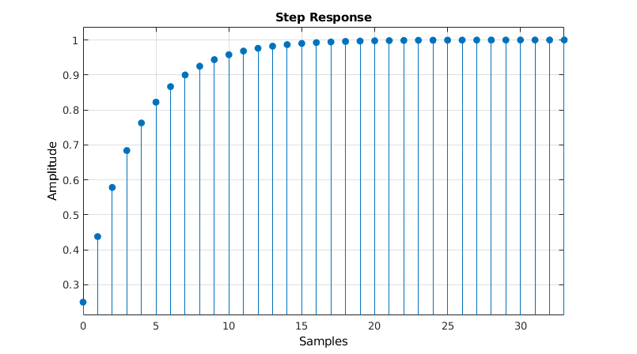
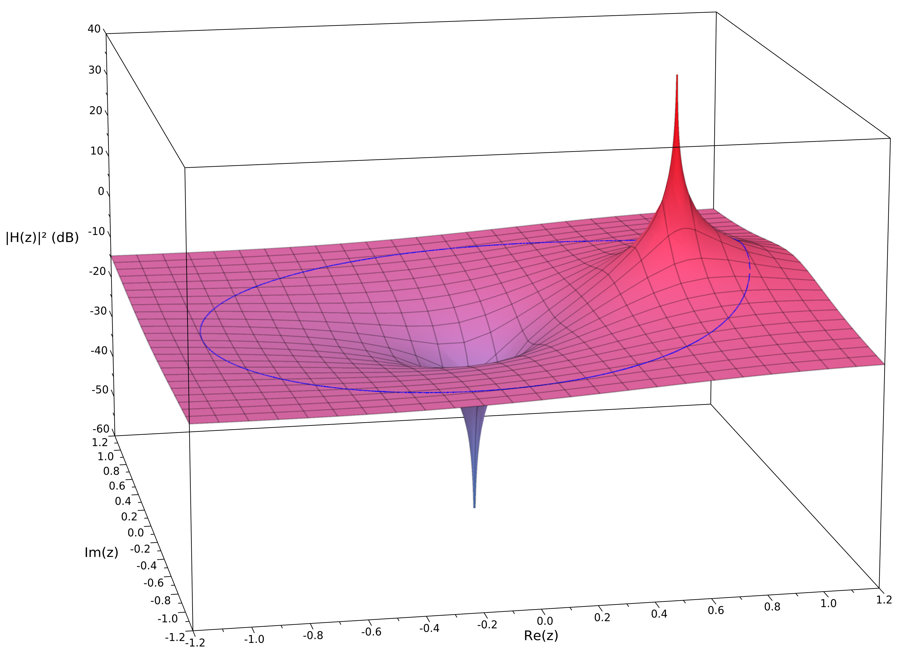
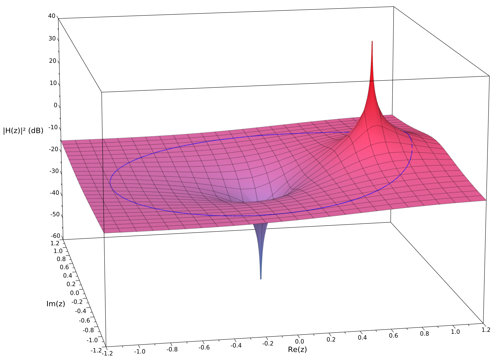

Exponential Moving Average
Pieter PDifference equation
The Difference equation of an exponential moving average filter is very simple: In this equation, is the current output, is the previous output, and is the current input; is a number between 0 and 1. If , the output is just equal to the input, and no filtering takes place
The filter is called 'exponential', because the weighting factor of previous inputs decreases exponentially. This can be easily demonstrated by substituting the previous outputs:
Impulse and step response
From the previous equation, we can now easily calculate the impulse and step response.
The impulse response is the output of the filter when a Kronecker delta function is applied to the input.
For example, if , the impulse response is as follows:

The step response is the output of the filter when a Heaviside step function is applied to the input. For example, if , the step response is as follows: 
Transfer function
You can express the output of discrete-time linear time-invariant systems, of which the EMA is an example,
as the convolution of the input with the impulse response.
This is because any input can be written as an infinite sum of shifted Kronecker delta functions
If is the transformation performed by the DTLTI system,
and by using the fact that is a linear transformation and that it is time-invariant:
Analysis of such systems is usually easier in the Z-domain, in which the convolution is reduced to a simple
product.
The (unilateral) Z-transform is defined as:
If , and
are the Z-transforms of the input, output and impulse response respectively, then:
is called the transfer function of the system.
Let's calculate the transfer function of the EMA.
We can take two main approaches: use the difference equation and use some of
the properties of the Z-transform to calculate , or apply
the definition of the Z-transform to the impulse response directly.
Using the difference equation
All you have to do is apply the time shifting property of the Z transform: Then just rearrange the terms.Using the impulse response
The last step is only valid if the sum converges, this is the case for . (See Infinite Geometric Series)
In these expressions, is a complex variable, and is a complex function.
There are a couple of interesting values for : values that result in the numerator becoming zero, called zeros,
and values that result in the denominator becoming zero, called poles.
By rewriting the transfer function, we can easily see that is a zero, and is a pole.
The poles and zeros determine the overall effect of the transfer function,
so pole-zero plots are a very useful tool when describing filters.
This is the pole-zero plot of the same example EMA as before, with .
 The zero in the origin is indicated by an O, and the pole at by an X.
The zero in the origin is indicated by an O, and the pole at by an X.
Frequency response
An important property of discrete-time linear time-invariant systems is that it preserves the pulsation (frequency)
of sinusoidal signals, only the phase shift and the amplitude are altered.
This makes it relatively easy to express the frequency response (sometimes called magnitude response) of a filter.
We're interested in the spectrum of frequencies that a signal contains, so it makes sense to decompose it as a sum of sines and cosines. That's exactly what the discrete-time Fourier transform does: Note that this is just a special case of the Z-transform, where .
Consider the DTFT of the Kronecker delta. Remember that is always zero, except for . This means that all but one terms of the infinite sum are zero, and what's left is just one. This is constant in function of pulsation , meaning that the Kronecker delta function contains all frequencies with the same amplitude. In other words, it is a very good reference. To determine the frequency response, we apply all frequencies to the input (the Kronecker delta), we measure those frequencies at the output, and compare their amplitudes to the original amplitude of 1.
We already know what the output signal of the system is when applying the Kronecker delta function
to the input, it's the impuls response .
We already know the DTFT of the impulse as well, it is the Z-transform of , , where
.
We can now calculate the amplitude of each frequency component in the output by taking the modulus
of . For reasons that will become apparent in a minute, we'll calculate the modulus squared.
We use Euler's formula for writing the exponential as a sines and cosines.
is the normalized pulsation in radians per sample. You can substitute it with
where is the frequency in Hertz, and is the
sample frequency of the system in Hertz.
We can now plot the filter's gain in function of the pulsation. These plots often use a logarithmic scale, to
show the gain in decibels. In order to calculate the power gain, the amplitude is squared.
Note that when a frequency is not present in the output signal, the gain will be .
If a frequency has an amplitude of one in the output signal, the gain will be .
 You can clearly see the low-pass behavior of the EMA: low frequencies have a near-unit gain, and high frequencies
are attenuated.
You can clearly see the low-pass behavior of the EMA: low frequencies have a near-unit gain, and high frequencies
are attenuated.
To get a better understanding of where this curve comes from, we can plot the entire surface
in the Z-domain.
As mentioned above, the DTFT is just a special case of the Z-transform, where , i.e. the unit
circle in the complex plane.
Remember that the point is a point with a distance of to the origin, and with an angle of
between its position vector and the positive x axis.
 
The image of the unit circle is shown in blue. Notice that this is the same curve as the blue curve in the
magnitude response graph above:
close to 0 when (the right half of the circle) and negative when (the left half of
the circle).

The image of the unit circle is shown in blue. Notice that this is the same curve as the blue curve in the
magnitude response graph above:
close to 0 when (the right half of the circle) and negative when (the left half of
the circle).
You can clearly see the effect of the pole at . The zero in the origin has no effect on the frequency
response,
because it doesn't alter the image of the unit circle, since
or .
Cutoff frequency
The cutoff frequency is defined as the frequency of the half-power point, where the power gain is a half. It's
often called the -point,
because .
To find it, just solve the following equation:
For example, if , then .
To convert it to a frequency in Hertz, you can multiply by , with the sample
frequency.
For example, if the sample frequency is , then .